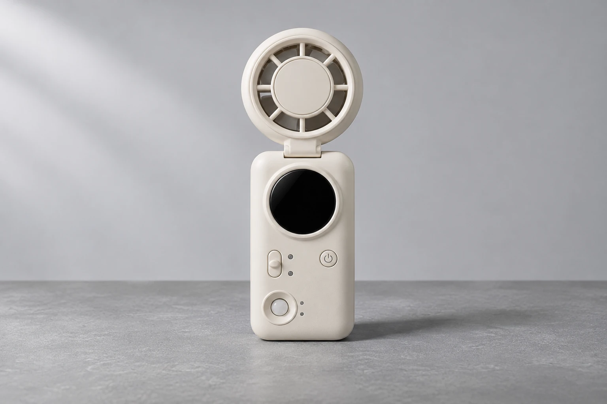
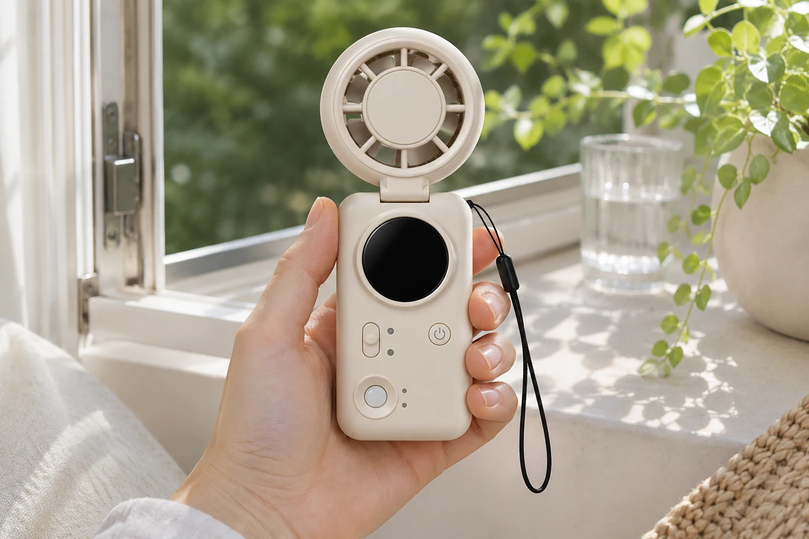
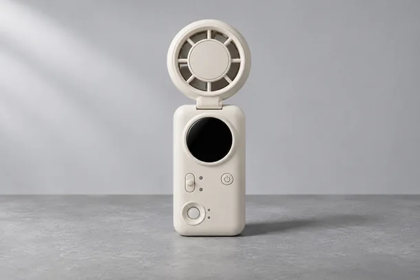

Жиналмалы желдеткіш
Алақандағы салқын
Ашсаңыз — сізге соғады. Жапсаңыз — алақаннан кіші, сөмкеге де, қалтаға да сияды.
1–100
Жылдамдық сырғытпамен: жеңіл желден күшті ағынға дейін.
- USB-C
- Жолда пауэрбанктен зарядталады.
- Бау
- Мойынға іліп, қолды бос ұстауға болады.
Желдеткіш қалай бүктеледі

Екіге бүктеледі
Басы топсамен бұрылып, тұтқаға жабысады. Ештеңе шешілмейді, жоғалмайды.

Кезекте, метрода, серуенде
Тымырсық кезде желдеткішті бір қолмен ұстап, ағынды бетке бағыттаңыз. Тұтқадағы дисплей жылдамдықты көрсетеді.
Қаладағы жаз бен сапарларға.
Сипаттамалар
Барлық параметрлер 12
- Модель
- SS-056
- Ауа жылдамдығы
- Біркелкі, 1-ден 100-ге дейін
- Салқындату
- COOL режимі
- Қуаты
- 10 Вт
- Қуаттау
- USB Type-C, 5 В / 2 А
- Аккумулятор
- Литий-ионды
- Өлшемі
- 46 × 43,2 × 122,2 мм
- Материалдары
- ABS пластик, силикон
- Құрылымы
- Жиналмалы
- Дисплей
- Цифрлық
- Жиынтығы
- Type-C кабелі, бау, сыйлық қорабы
- Кепілдік
- 12 ай
Жиынтықтағы кабельге қандай ұя керек?
Кабельдің қуат көзіне жалғанатын ұшында тікбұрышты USB-A штекері бар. Type-C ұшы желдеткішке қосылады. Адаптеріңізде қай ұя бос екенін қарап алыңыз.
Ауа жолын жаппай қалай ұстауға болады?
Дөңгелек бастың астындағы жалпақ тұтқадан ұстаңыз. Бастың екі жағындағы торларды қолмен жаппай, еңкею бұрышын реттеңіз.
Сөмкеге саларда бөлшектерін шешу керек пе?
Желдеткіштің басы тұтқаға топсамен жалғанған. Оны өшіріп, басын корпусына қарай бұрсаңыз жеткілікті. Торы мен қалақшалары өз орнында қалады.
Қолда ұстап тұрғанда басқару тетіктері қай жерде болады?
Дөңгелек дисплей мен тетіктер тұтқаның бір жағында. Дисплейді өзіңізге қаратып ұстаңыз. Оның астынан «+» пен «−» белгілері, одан төменірек қосып-өшіру тетігі көрінеді.
Шынайы көрінісі
Телефонға түсірілген қысқа бейнелер.

Климат
Жиналмалы желдеткіш
[9 990 ₸]
- [Қоймада бар]
- Жеткізу [1–7 күн]
- Кепілдік [12 ай]
Сатушыға сұрақ қою
Мәтінді көшіріп, сатушыға жіберіңіз. Тауар атауы енгізілген.